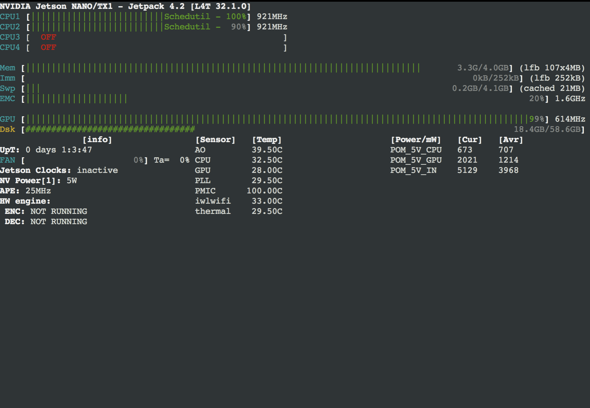

Jetsonシリーズのメモリ
Jetsonシリーズのメモリ
| Jetson | メモリ | 速度 | 使用電力 |
|---|---|---|---|
| Nano | 4GB | 0.5TFLOPS(FP16) | 5-10W |
| TX2 | 8GB | 1.3TFPLOPS(FP16) | 7.5-10W |
| XAVIER NX | 8GB | 6TFLOPS(FP16) 21 TOPS(INTT8) |
10-15W |
| AGX XAVIER | 8GB | 20-32TOPS(INT8) 5.5-11TFLOPS(FP15) |
10-30W |
Nanoのメモリサイズは4GBなので、メモリ使用を最低限にするように心がける。
学習時のメモリ使用
